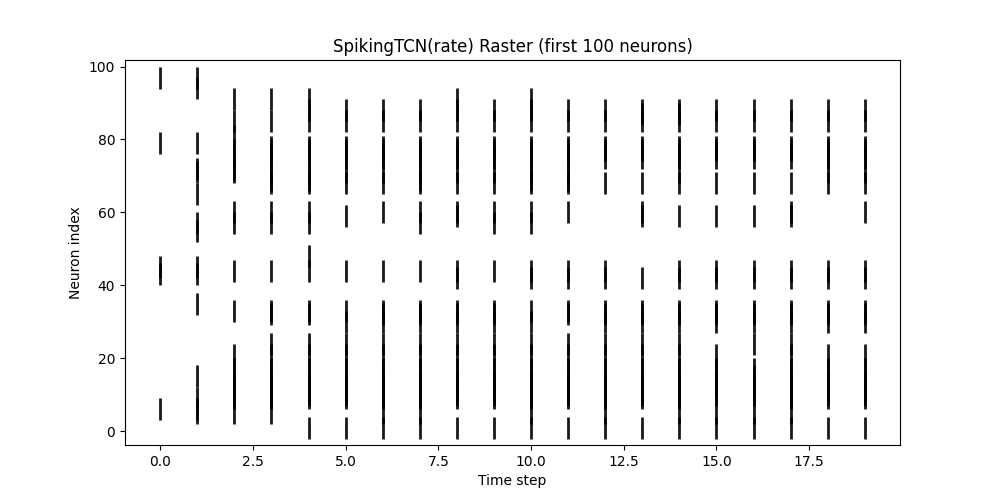
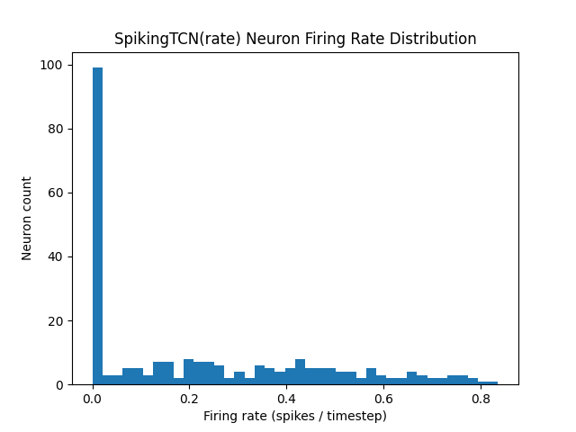
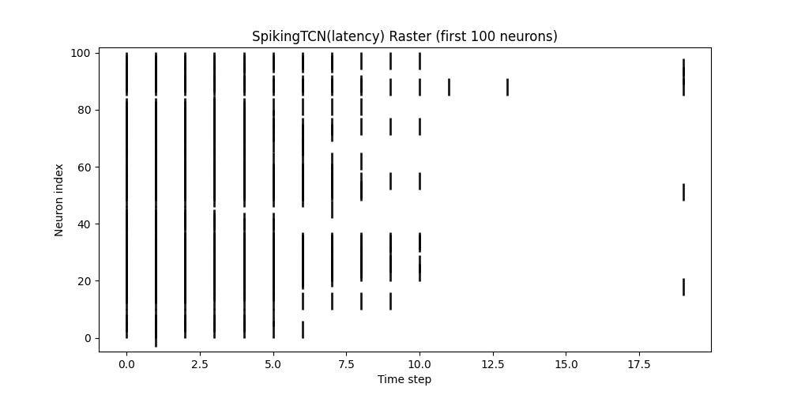
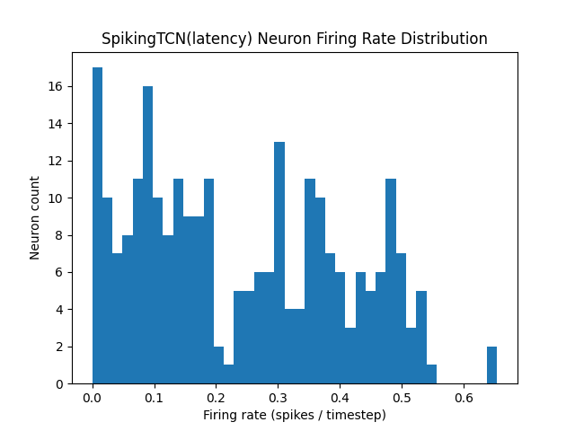
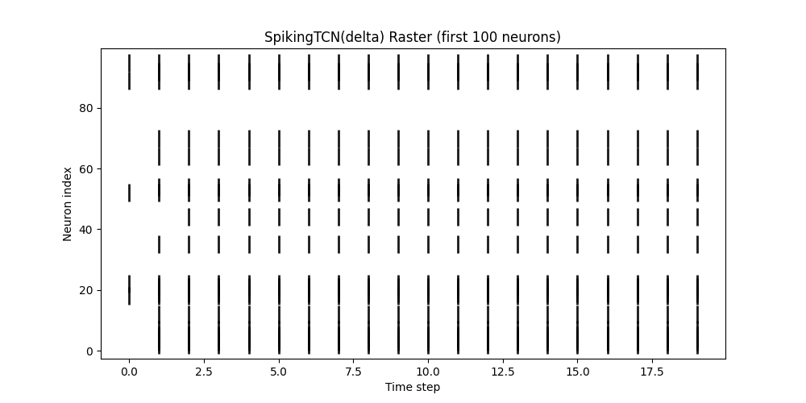
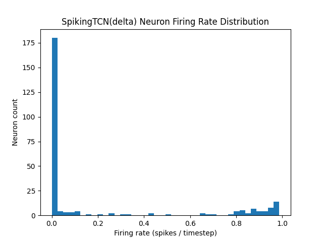

Raster plots (left) show which neurons fired at each timestep(Ts=20) (first 100 neurons). Histograms (right) show the distribution of per-neuron firing rates (spikes / timestep).
All figures are per-sample summaries captured during inference.
SpikingTCN — Rate Encoding
Raster — first 100 neurons

Temporal spiking pattern under rate encoding.
Neuron firing rate distribution

Many neurons remain near-silent, with an active subset carrying most events.
Observation: rate encoding tends to spread activity over timesteps; sparsity is driven by threshold and β.
SpikingTCN — Latency Encoding
Raster — first 100 neurons

Spike timing concentrates early/late depending on stimulus intensity.
Neuron firing rate distribution

Latency encoding often yields one-spike-per-neuron behaviour, broadening the rate distribution.
Observation: latency uses timing to encode magnitude; useful for strict temporal cues.
SpikingTCN — Delta (On/Off) Encoding
Raster — first 100 neurons

Spikes occur on signal changes (on/off), highlighting transitions.
Neuron firing rate distribution

Highly sparse for flat segments; bursts when the signal changes rapidly.
Observation: delta encoding is naturally event-driven; ideal when changes carry most information.